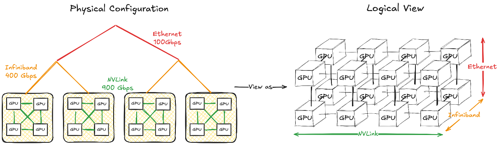

Cost Model¶
Single-GPU Cost Modeling¶
Latency / Runtime Cost Estimation
Roofline Model
Idea: \(\max(\text{compute time}, \text{memory access time})\)
Use linear regression model for NVIDIA GPUs
Compute time model (\(\text{latency} + \text{bandwidth} \times \text{#flops}\))
Memory access model (\(\text{latency} + \text{bandwidth} \times \text{#bytes}\))
{kind=link}
Memory Cost Estimation
Memory cost estimation for each operator
FX graph enables precise peak memory analysis
Memory liveness analysis
Track the time intervals during which tensors are alive
{kind=link}
Multi-GPU Cost Modeling¶
Communication Modeling
Challenge * Communication cost varies for multi-level hierarchical communication * Congestion may occur in certain scenarios
Device Mesh Abstraction
{kind=link}
Mapping the GPU network hierarchy into a N-dimension device mesh
Devices in the same mesh dimension have the same communication capability (latency, bandwidth)
How to obtain the device mesh?
Current Approach: Predefined device mesh shape
Profile all-reduce among the devices in the same mesh dim
Linear regression along each mesh dim \(i\) (\(\text{time}_i = \text{latency}_i + \text{bandwidth}_i \times \text{#bytes}\))
In-Progress: Auto Mesh Discovery
Motivation
More robust to complex communication architecture
More accurate since each dimension can be considered respectively
Profile the communication latency between each mesh dimension
Search the mesh shape where the communication time along the same dim with max similarity
Linear regression along each mesh dim \(i\) (\(\text{time}_i = \text{latency}_i + \text{bandwidth}_i \times \text{#bytes}\))